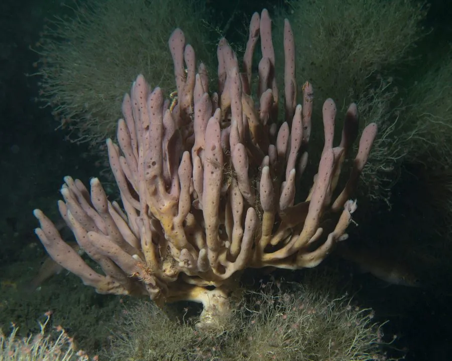

其他无脊椎动物 · 动物界
紫海绵 Haliclona oculata

群体呈紫色分枝状、表面布满大孔的海绵，没有组织和器官，靠鞭毛细胞抽水滤食，栖息于潮下带硬质海底。
- 分类
- 门多孔动物门纲寻常海绵纲目简骨海绵目科链海绵科属软海绵属
- 栖息环境
- 北大西洋与北太平洋潮下带至水深一百米以上的岩礁、砾石与贝壳底
- 地理分布
- 北大西洋和北太平洋的温带与寒带海域
- 保护级别
- 尚无保护级别；底拖网作业与海水污染会破坏栖息地
物种志
紫海绵的群体呈直立的树枝状或管状，高可达二十厘米，分枝圆柱形，末端钝圆或略扁，基部附着在礁石上。它的体色紫褐至深紫，表面密布大小不等的入水孔，中央有较大的出水孔，管壁薄而有弹性，压下去能回弹，像一块多孔的橡胶。它的骨骼由细小的硅质骨针和海绵丝构成，支撑着柔软的躯体。
它分布于北大西洋和北太平洋的温带与寒带海域，栖息在潮下带至水深一百米以上的岩礁、砾石和贝壳底，喜欢水流较强、悬浮物丰富的位置。海绵没有真正的组织和器官，靠体内的领鞭毛细胞制造水流，把水中的细菌、浮游藻类和有机颗粒滤下来，一只个体的滤水量每天可达自身体积的许多倍。它雌雄同体，可进行有性生殖，也能通过断枝进行无性繁殖。它常与海葵、苔虫和蛇尾共栖，体内还能住进小虾和鱼。它尚无保护级别，底拖网和海水污染会破坏其栖息地。
形态与习性
- 群体直立分枝状或管状，高可达二十厘米
- 体色紫褐至深紫，表面密布入水孔
- 骨骼硅质骨针与海绵丝构成
- 栖息水层潮下带至水深一百米以上的硬质海底
- 食性领鞭毛细胞制造水流，滤食细菌与有机颗粒
- 共栖常与海葵、苔虫、蛇尾及小虾共栖
趣味知识
- 它没有嘴也没有胃，全身的小孔就是它的进食通道。
- 一只海绵一天能把成吨的海水抽一遍，滤下里面的细菌。
- 它紫色的枝杈里常藏着透明的小虾，把海绵当成了公寓。